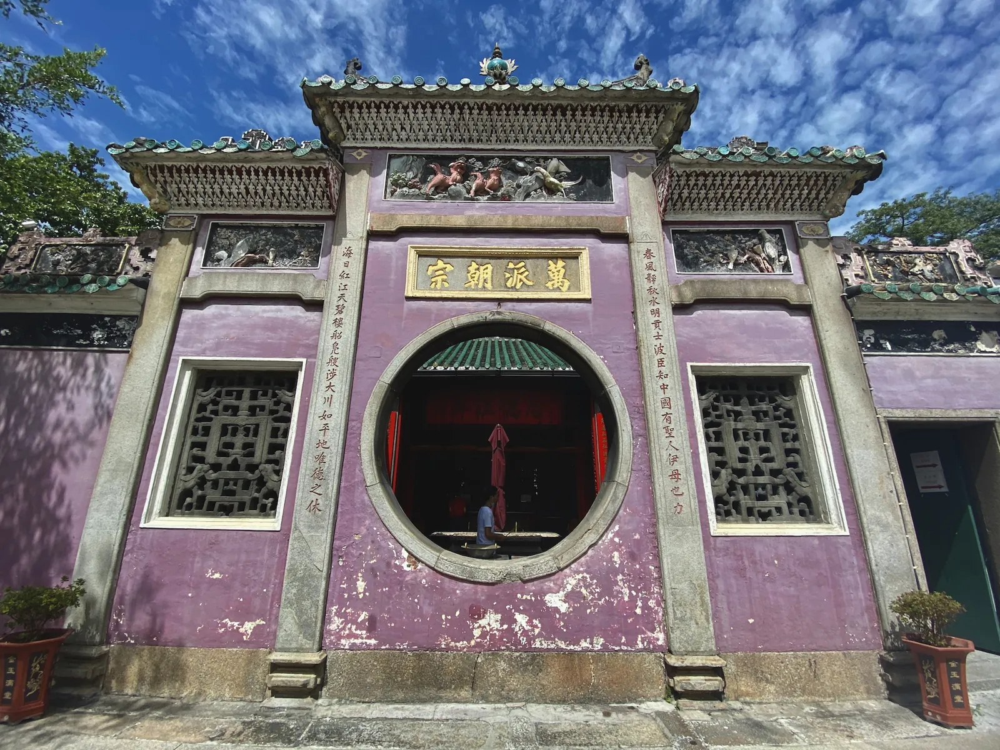
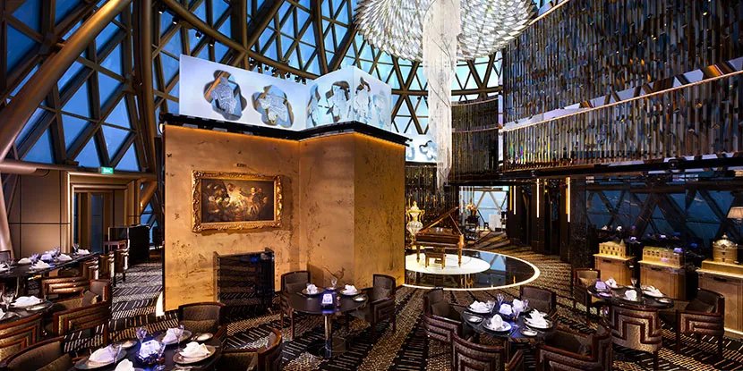
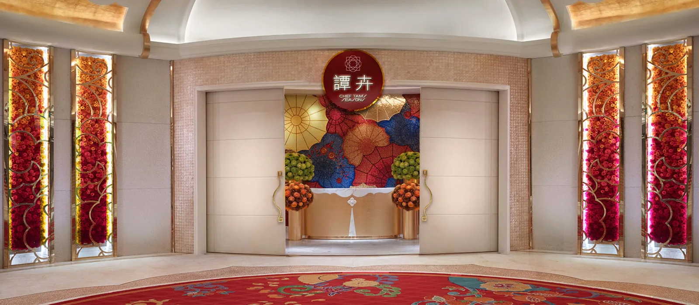
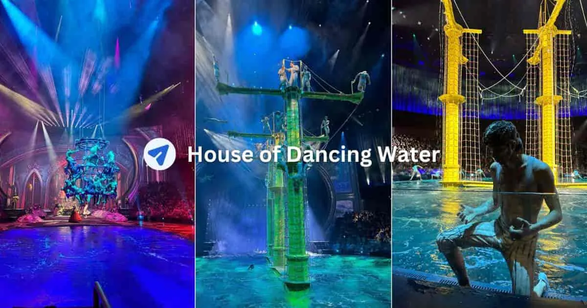
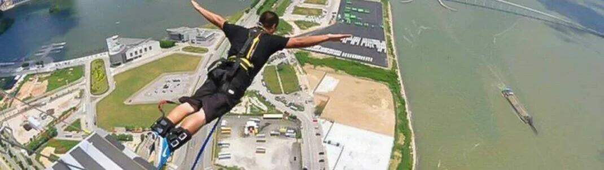

Weekend Dispatch · June 2026 · Macau SAR
8 starred restaurants profiled · 2 days mapped by category · 84 citations · June logistics
The Strategic Decision
Pick your Michelin table first. Its geography determines the shape of both days.
Planning Brief
Macau splits hard between the Peninsula (UNESCO old town, Grand Lisboa, Wynn Macau) and Cotai (mega-resorts, ~15–20 min taxi away).[1] Three of the eight starred restaurants are Peninsula-side — Robuchon au Dôme, The Eight, and Feng Wei Ju — while five are Cotai-side.[2] Put the Michelin dinner on Day 1 evening and let the morning follow naturally: Peninsula dinner → lead with the UNESCO old town walk; Cotai dinner → lead with a resort spectacle or The House of Dancing Water.[3] Reserve Day 2 afternoon for the quieter island: Taipa Village street food and Coloane's original egg-tart bakery.
"The sharpest open question is one the research cannot answer: how far in advance are reservations required? Robuchon au Dôme and Jade Dragon are typically booked weeks out; Feng Wei Ju reportedly needs little advance notice." — from the research brief
48 Hours
June demands morning-outdoor, afternoon-indoor discipline: ~30°C at 84% humidity with ~20 rainy days per month.[4]
Day One
Day Two
The Michelin Eight
18th Michelin Guide Hong Kong & Macau, released 19 March 2026. 8 restaurants at 2- or 3-star out of 59 total.[2] Prices per person in MOP (1 MOP ≈ USD 0.12).[13]

Closed Tue & Wed · Lunch MOP 998–1,598 · Dinner MOP 3,888[11]
18 consecutive Michelin stars (2009–2026).[12] Asia's largest wine collection — 17,300+ labels; Wine Spectator Grand Award every year since 2005. 360° panorama of Macau from the dome at 238 m.
Best for: Wine lovers; the most dramatic room in Macau.
Lunch 12:00–15:00 · Dinner 18:00–22:30 · ≈ MOP 600/pax[13]
Only restaurant in Macau with both 3 Michelin stars and 3 Black Pearl diamonds. Seasonal tasting menus; "Nourish & Thrive" wellness menu tied to healing ingredients. Children 10+.[14]
Best for: The flagship Cantonese experience; celebratory Chinese meal.

Beyond the Table
Pick one marquee experience and build the day around it — they are on opposite ends of the spectacle spectrum.

Aquatic Spectacle · Cotai · Wed–Sun
Reopened in 2025 after a five-year hiatus, fully reimagined by Giuliano Peparini on a stage holding water equal to five Olympic pools. June–October showtimes 4:30 pm / 7:30 pm. Advance-booking discounts available.[3]
From ~US$87 (Gallery) · Up to ~US$187 (Golden Circle)

World's Highest Commercial Bungy · 233 m · Peninsula
4–5 second free-fall hitting up to 200 km/h on a guide-cable system, rebounding ~30 m above ground. Night jumps available. Gentler options on the same tower: cable-controlled Skyjump (MOP 2,188), Skywalk glass-floor rim walk (MOP 788).[9][29]
Bungy MOP 3,088 · Skyjump MOP 2,188 · Skywalk MOP 788
Streets & Villages
After grand Lisboa domes and mega-resort ceilings, these streets feel like the actual city.
The pedestrian Rua do Cunha is wall-to-wall street food: pork-chop buns, almond cookies, egg tarts. Add the five pastel Taipa Houses-Museum villas, whitewashed Our Lady of Carmel Church, and Taipa's oldest Tin Hau temple (1785). Bikes from MOP 20/hr.[27]
Pastel lanes, a tiny waterfront square, the yellow Chapel of St Francis Xavier, and Lord Stow's original egg-tart bakery — the quiet antidote to Cotai glitter. Nearby Hac Sa Beach has natural black sand (buses 15 / 21 / 25 / 26A).[10]
Getting There & Around
| Ferry from HK | Cotai Water Jet ~55–60 min to Taipa terminal; Cotai First from HKD 330.[23] |
| Bridge from HK | HZMB Golden Bus over the 55 km bridge, HKD 65 (~45 min crossing) — cheapest route, 24 hrs service. |
| Local transport | Free casino shuttle buses link airport/ferries to all resorts (no booking). Public bus flat MOP 6. Taxi start MOP 21 + MOP 8 airport/ferry/border surcharge.[1] |
| Currency | MOP (pataca); HKD accepted 1:1 everywhere. Casinos prefer HKD. 1 MOP ≈ USD 0.12. |
| Visas | Visa-free 30–90 days for most Western nationals; UK up to 6 months. Passport valid 90+ days beyond stay. |
| June weather ⚠ Typhoon season | ~30°C at 84% humidity; ~20 rainy days; 300 mm+ rain. Typhoon season starts May–Sep — keep indoor resort options on standby.[4] |